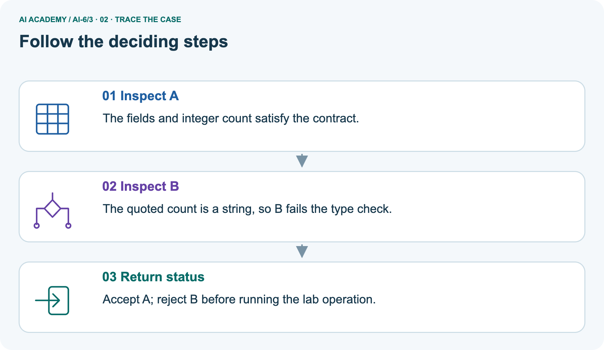
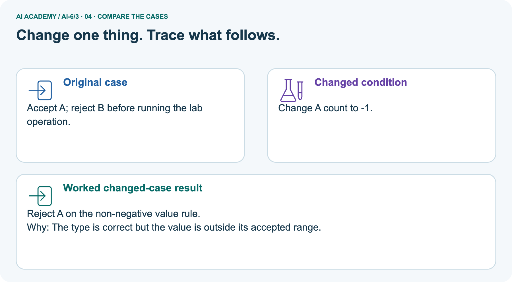
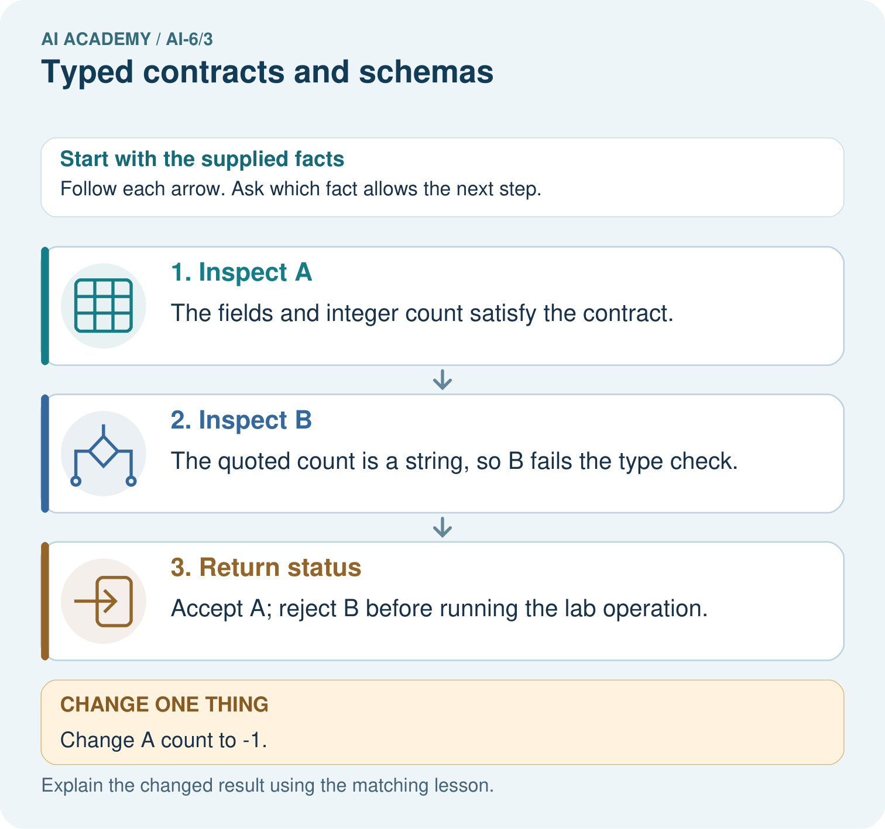
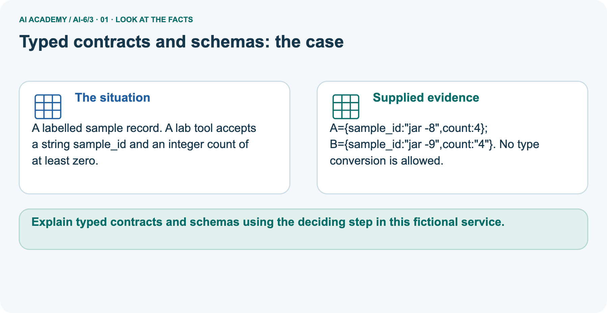
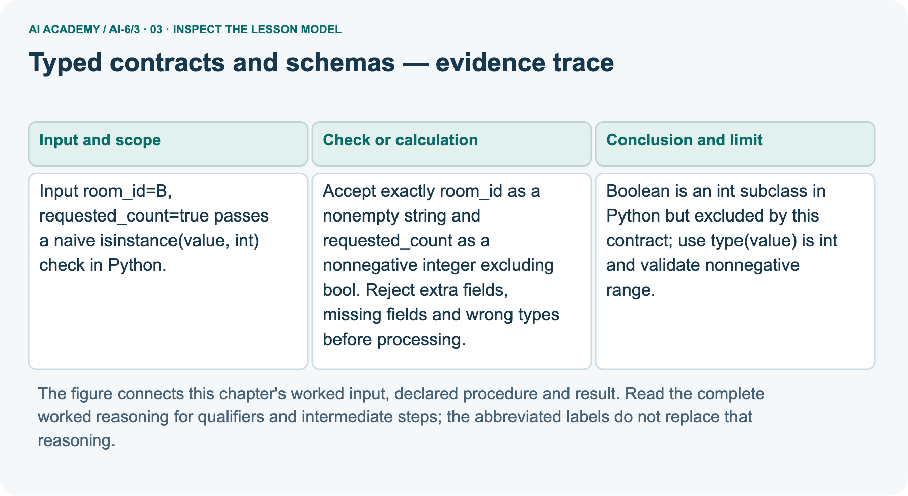
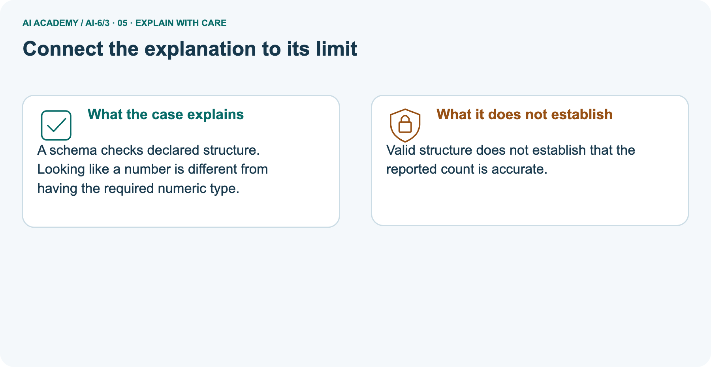
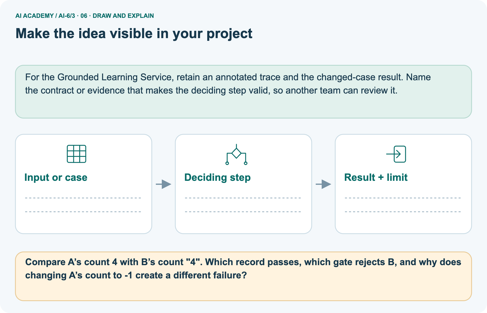

AI Academy · Level 6 · Grade 11 · Week 3 · Student lesson
Typed contracts and schemas
Learn to understand, design, build, test and explain AI systems responsibly.
Project: Grounded Learning Service
THE CONNECTED WEEK
Check the fields. Check the type. Check the value.
Validate incoming records without coercing them and explain the limits of a schema-valid result.
Keep one habit: Closed-object contract → ordered gates → Boolean trap → sample picture → domain limits → executable probes → mixed independent explanation.
Main lesson · Section 1
Check what a record contains before processing it
A value can look right while having the wrong type or structure.
Learning goals
I can explain the mechanism and terminology of typed contracts and schemas.
I can apply the stated procedure to a new case with a traceable result.
I can identify an assumption or limitation and design a revealing follow-up.
Retrieve input-validation boundaries
Close your notes first. A rough first answer helps us choose the right starting point; it is not a score for your ability.
Without opening the old lesson, explain one key idea from Architecture and data flow. Give an example and a mistake that the idea helps you avoid.
After trying, check the relevant lesson or ask your teacher. Change the part of your explanation that the evidence shows was wrong.
Prerequisite and starting response
Recall Architecture and data flow. Explain why a recorded result needs its input conditions and evidence source before it can support a claim.
End goal
Explain typed contracts and schemas using the deciding step in this fictional service.
Earlier wording, alternatives and picture transcripts
Your learning target
Remember before reading
This week you will practise:
Explain the mechanism and terminology of typed contracts and schemas
Apply the stated procedure to a new case with a traceable result
Identify an assumption or limitation and design a revealing follow-up
Retrieve what you already know
This week’s end goal
Main lesson · Section 2
Write the schema as a sequence of observable checks
Structure, type and allowed value range are separate conditions.
Start with the form analogy
Imagine a room-request form with two labelled boxes. The room identifier must be text, and the requested count must be an actual nonnegative integer. A quoted number is still text. A Boolean answers yes/no rather than supplying a count. The service checks the complete form before it looks up rooms or performs any action. A type annotation in code documents an expectation; it does not itself check incoming values.
Define typed contracts and runtime validation
Typed contracts define values, required fields and failure outcomes. Runtime input still needs validation even when program annotations exist.
Complete closed-object schema
| Contract part | Exact rule in this exercise |
|---|---|
| Whole request | A Python dict with exactly room_id and requested_count |
| room_id | A nonempty Python string; no room existence or format check yet |
| requested_count | Exact Python int type and value at least zero; bool excluded |
| Unexpected or missing fields | Reject the request before processing |
| Type conversion | None: do not turn quoted digits or floats into integers |
| Failure outcome | ValueError with the relevant field/type/range category |
| Valid output | A copied validated dictionary, not a booking or permission grant |
Name supplied and missing evidence
Earlier wording, alternatives and picture transcripts
Begin by writing the question the procedure is intended to answer. Identify the information already supplied, the information it will produce and the information still missing.
These are constructed classroom examples; they do not require live accounts, private records or an external service. Do not treat a plausible explanation as a measured outcome.
Main lesson · Section 3
Trace a Boolean through the correct gates
The declared contract, rather than a convenient conversion, decides acceptance.
Original field rules
Accept exactly room_id as a nonempty string and requested_count as a nonnegative integer excluding bool. Reject extra fields, missing fields and wrong types before processing.
Complete validation flow
Validate the outer structure before individual fields
Explain the Boolean subclass trap
Python has a subtle detail: isinstance(True, int) is True because bool is an int subclass. Our contract deliberately excludes Booleans, so type(True) is int is False. For the main record {room_id: "B", requested_count: True}, the two required fields and room string pass, but the count fails the exact-type gate. Do not silently reinterpret True as a request for one place.
Python True corresponds to JSON true when decoding JSON.
State the contract before tracing
Before applying the procedure, write its units, denominator or decision boundary where relevant. A partner should be able to repeat each step using the same inputs.
If a required input is absent or violates the stated contract, record that condition explicitly instead of quietly replacing it with a convenient value.
Explain the visual
Point to the input, the deciding step and the result in this week’s visual. Explain the same step in ordinary words. A picture helps when you can say what each part represents.
Earlier wording, alternatives and picture transcripts
Typed contracts and schemas — evidence trace
Connect the picture and the explanation
Main lesson · Section 4
Change the type or value and predict the first failing gate
Keep the schema fixed when comparing inputs.
Current task and response
Input room_id=B, requested_count=true passes a naive isinstance(value, int) check in Python. Show the intermediate steps and give the conclusion with its scope.
Predict the negative-count picture
Change: Change A count to -1.
Check after predicting
Prediction: Reject A on the non-negative value rule.
Reason: The type is correct but the value is outside its accepted range.
Earlier wording, alternatives and picture transcripts
Compare a familiar case with a changed case
Change one thing in the pictured case
Main lesson · Section 6
Separate a type failure from a value-range failure
Both stop processing, but their explanations differ.
Main Boolean input and exact-type conclusion
Input room_id=B, requested_count=true passes a naive isinstance(value, int) check in Python.
Boolean is an int subclass in Python but excluded by this contract; use type(value) is int and validate nonnegative range.
Keep the trace’s scope
Compare the intermediate evidence with the final statement. Explain why each number or decision follows from the stated inputs.
The conclusion belongs to this scenario and procedure; changing the inputs, evaluation population or authority can change what it establishes. Retain the raw record so a later revision can be compared honestly.
Separate pictured sample records and full givens
A labelled sample record. A lab tool accepts a string sample_id and an integer count of at least zero.
A={sample_id:"jar -8",count:4}; B={sample_id:"jar -9",count:"4"}. No type conversion is allowed.
The main room schema uses room_id and requested_count. The picture is a separate lab-sample schema using sample_id and count, with no conversion allowed. A has sample_id "jar -8" and integer count 4; B has "jar -9" and string count "4". A satisfies the pictured structure/type rules; B fails the count type. Changing A’s count to −1 keeps the integer type but fails the nonnegative value rule.
A structurally valid count is not evidence that anyone counted the sample correctly.
Trace the integer/string distinction



Read the picture one step at a time
A schema checks declared structure. Looking like a number is different from having the required numeric type.
Predict the negative integer change
Change one thing: Change A count to -1. Predict the result before checking the explanation. What remains the same?
Check after predicting



Explain the failing gate and measurement limit
Valid structure does not establish that the reported count is accurate.
Read the labelled picture: Compare A’s count 4 with B’s count "4". Which record passes, which gate rejects B, and why does changing A’s count to -1 create a different failure?
Reference: original optional local check
Optional local lab: predict the printed result before running this standalone Python 3 example. Change one relevant boundary input, record the outcome and state the contract or statistical assumptions.
The program uses fictional values and the Python standard library; it performs no external operations.
def nonnegative_integer(value):
return type(value) is int and value >= 0
def validate_request(value):
if type(value) is not dict or set(value) != {'room_id', 'requested_count'}:
raise ValueError('request fields')
if type(value['room_id']) is not str or not value['room_id']:
raise ValueError('room ID')
if not nonnegative_integer(value['requested_count']):
raise ValueError('requested count')
return dict(value)
print(validate_request({"room_id": "A", "requested_count": 0}))Earlier wording, alternatives and picture transcripts
Learn from the worked case
Cover the result before checking it. Say what is given, choose the procedure, and follow one step at a time. Then uncover the result and explain your first mismatch. Ask why a step is allowed, not only what number it produces.
A pictorial worked case: Typed contracts and schemas
The facts we will use



Why this result follows
What this example does not establish
Main lesson · Section 7
Do not ask a schema to prove more than its contract
Valid structure is a useful first gate, not the whole service decision.
Core qualification and failure analysis
Schema-valid input can still be unauthorised or semantically unsuitable; subsequent checks remain necessary.
A useful check asks what would make the reasoning fail. Distinguish a failure to execute the declared procedure from a weakness in the procedure itself.
The first may require a correction; the second requires an explicitly revised method and new evidence. Preserve unsuccessful cases so an improved result cannot hide the original problem.
Complete structure-versus-domain cases
| What passes or fails? | What it establishes and what remains |
|---|---|
| Correct fields, room B, integer count 2 | Schema-valid only; room existence/permission/capacity not checked |
| Unexpected book field | Reject extra field; do not ignore it or execute it |
| Missing requested_count | Reject incomplete structure; do not invent a default |
| Empty room_id string | Reject room ID under the nonempty rule |
| Whitespace-only room_id | Nonempty string passes this literal schema; format/domain checks are separate |
| A valid-looking count | Does not establish truthful measurements |
| A later authorization rule | Must still run after structure validation before any permitted operation |
Guided explanation and repair
A report omits this qualification: Schema-valid input can still be unauthorised or semantically unsuitable; subsequent checks remain necessary.
Explain how omitting it could change a reader's interpretation, and write an accurate replacement.
Earlier wording, alternatives and picture transcripts
Locate the earliest unsupported step
Main lesson · Section 8
Practise naming the first failed condition
Write field, type and range reasoning rather than only accept/reject.
Current explanation and guided scope check
Explain the weekly mechanism in your own words. Use the worked scenario to name its input, decision rule and output.
Supported W2 record
Use workbook W2 for the connected example “Typed contracts and schemas”. First fill the input and rule boxes. Try the middle steps before asking for a hint. After a hint, try the next step yourself.
| Plan | Do | Check |
|---|---|---|
| What is given? Which rule or procedure applies? | Record each intermediate step. | Does the result follow? What remains unknown? |
Explain your trace to a partner. Your partner points to one step to check. Swap roles on the next case. Each person writes their own explanation.
Individual evidence-limit check
Use the worked case for Typed contracts and schemas. Proposed explanation: “The worked result establishes every future case”. Decide whether this explanation is supported.
Point to the step or supplied fact that decides; explain your repair if needed.
Answer on your own before discussion. If you are unsure, say which step you need help with.
Lab-sample picture response
Compare A’s count 4 with B’s count "4". Which record passes, which gate rejects B, and why does changing A’s count to -1 create a different failure?
Reserve the mixed independent count set
This is supported practice. Keep the separately named independent case for an attempt before feedback.
Earlier wording, alternatives and picture transcripts
Practise with less help: Trace the worked case
Check your reasoning
Explain the picture
Main lesson · Section 9
Run a complete schema audit before any domain operation
Preserve the exact input and first failing condition.
Current Boolean-trap investigation
Input room_id=B, requested_count=true passes a naive isinstance(value, int) check in Python. Show the intermediate steps and give the conclusion with its scope.
Complete executable validation and probe audit
"""Closed-object validation; no coercion, room lookup or booking."""
def nonnegative_integer(value):
return type(value) is int and value >= 0
def validate_request(value):
if type(value) is not dict or set(value)!={'room_id','requested_count'}:
raise ValueError('request fields')
if type(value['room_id']) is not str or not value['room_id']:
raise ValueError('room ID')
if not nonnegative_integer(value['requested_count']):
raise ValueError('requested count')
return dict(value)
probes=[('valid',{'room_id':'B','requested_count':2}),
('Boolean',{'room_id':'B','requested_count':True}),
('string',{'room_id':'B','requested_count':'2'}),
('negative',{'room_id':'B','requested_count':-2}),
('extra field',{'room_id':'B','requested_count':2,'book':True}),
('missing count',{'room_id':'B'}),
('empty ID',{'room_id':'','requested_count':2}),
('nonobject',['B',2])]
results=[]
for name,value in probes:
try:
output=validate_request(value)
results.append((name,'valid',output))
except ValueError as error:
results.append((name,'invalid',str(error)))
print('Python isinstance(True,int):',isinstance(True,int))
print('Contract exact type(True) is int:',type(True) is int)
for result in results:print(result)
assert results[0][1]=='valid' and all(r[1]=='invalid' for r in results[1:])
original={'room_id':'B','requested_count':2}
validated=validate_request(original)
assert validated==original and validated is not original
# A nonempty string is all this contract requires: whitespace also passes.
assert validate_request({'room_id':' ','requested_count':2})['room_id']==' '
# Whether that ID exists, is authorized, or has room capacity is not checked here.
# Do not silently add trimming, numeric conversion, or a room-ID format rule.
print('Schema-valid does not establish room existence, authority, capacity, or count truth.')
Expected gates, nonempty-ID scope and assessment distinction
Predict the first failed gate for every record before running or tracing. The complete program contrasts a valid count 2 with True, a quoted count, a negative integer, extra/missing fields, an empty room ID and a nonobject. It copies valid input rather than mutating it. It also makes the literal nonempty-ID rule explicit: whitespace is not empty, so this schema alone does not reject it.
A stricter room-ID format would need a declared contract revision. The original zero-count example is available as reference; treat that familiar boundary as recall in the later mixed set, and require independent explanations for its other types. No lookup, authorization, capacity check or booking occurs here.
Evidence ledger and reflection
| Record | Your evidence |
|---|---|
| Given input and fixed rule | |
| Prediction before checking | |
| Actual result, or “not run” | |
| First mismatch and one explanation | |
| Boundary or missing input and expected response |
On paper, trace the supplied procedure. If code is provided, predict before running it in a local practice file. Never write an expected answer as though it were an observed run.
Before trying: what do I expect, and why? While trying: which step could first go wrong? Afterwards: what did I actually observe, and what should change? Keep “not run” if you only traced the procedure.
Reference: original validation snippet
def nonnegative_integer(value):
return type(value) is int and value >= 0
def validate_request(value):
if type(value) is not dict or set(value) != {'room_id', 'requested_count'}:
raise ValueError('request fields')
if type(value['room_id']) is not str or not value['room_id']:
raise ValueError('room ID')
if not nonnegative_integer(value['requested_count']):
raise ValueError('requested count')
return dict(value)
print(validate_request({"room_id": "A", "requested_count": 0}))Earlier wording, alternatives and picture transcripts
Predict, investigate and preserve the evidence
Plan → try → check
Main lesson · Section 14
Try alone: explain a mixed set of count values
Apply the fixed exact-type and nonnegative rules; name why each result follows.
Complete count classification task
Classify counts 0, -1, "3", False under the stated contract.
First attempt and support record
Attempt this case before feedback. Record any help. Earlier examples below are further practice; a case already practised with feedback cannot establish fresh transfer.
Feedback after trying
Attempt the independent case before hints. Record whether you worked alone, used a hint or followed a model. After feedback, fix the first unsupported step and explain why it changed.
A later check uses a changed case, not a copied answer.
Earlier wording, alternatives and picture transcripts
Independent case: Apply a new case independently
Attempt this without hints
Classify counts 0, -1, "3", False under the stated contract.
Record support used: none, hint or teacher explanation. After feedback, a different case is needed to demonstrate independence.
Use feedback to improve
Main lesson · Section 11
Save the schema alongside accepted and rejected examples
Keep versioned field rules and expected failure categories.
Project task and artifact
Add a labelled typed contracts and schemas evidence sheet to Grounded Learning Service. Show how you can explain the mechanism and terminology of typed contracts and schemas.
Use the supplied fictional case and keep its inputs, intermediate steps, calculation or prediction, and limitation. Connect this record to last week’s record; a matching answer without a trace is insufficient.
| Project evidence | Record |
|---|---|
| Component and version | |
| Inputs permitted at prediction time | |
| Trace and comparison with earlier work | |
| Failure, limit and human review |
Actual run or trace and limitations
For the Grounded Learning Service, retain an annotated trace and the changed-case result. Name the contract or evidence that makes the deciding step valid, so another team can review it.
Earlier wording, alternatives and picture transcripts
Evidence for your project
Main lesson · Section 16
Finish with a precise gate and an honest limit
Schema-valid does not mean authorized, accurate or suitable for the task.
Retrieve and explain
Close your notes. Explain this goal in your own words: Explain the mechanism and terminology of typed contracts and schemas
Plan a changed-case return
If you are unsure, return to the worked picture and explain one arrow. If you are ready, change an input or assumption and justify your prediction.
Save your workbook evidence. At the next review, try a different case before opening your old answer.
Reference bank and extra practice
Choose the reference that helps your next step.
Reference · Use service vocabulary precisely
Reference · Section 5
Reference · Use service vocabulary precisely
Connect each term to an input, operation, evidence source or outcome.
Vocabulary and your explanation
| Word | Meaning |
|---|---|
| Schema | A contract for structure and types |
| Runtime validation | Checking actual incoming values |
| Closed object | An object rejecting unexpected fields |
Extra challenge · Explain a stronger case
Reference · Section 10
Extra challenge · Explain a stronger case
Choose the next challenge after the main route.
Explain,repair and extend
Explain the weekly mechanism in your own words. Use the worked scenario to name its input, decision rule and output.
A report omits this qualification: Schema-valid input can still be unauthorised or semantically unsuitable; subsequent checks remain necessary.
Explain how omitting it could change a reader's interpretation, and write an accurate replacement.
For the worked scenario, propose one additional case that could reveal a failure, describe its expected outcome before running it, and explain what would need to remain fixed for a fair comparison.
Do not reuse W4 as a new final test after receiving feedback.
Explain → apply → challenge
Reference · Check the service reasoning and its limits
Reference · Section 12
Reference · Check the service reasoning and its limits
Use after practice; keep the selected independent case for its first attempt.
Current explanation and response
Complete the supported workbook tasks before attempting W4 independently. Record any hints or help used. After feedback, use the teacher's fresh retry rather than copying the earlier answer.
For a project, select a relevant new case, predict the outcome from the declared rule and preserve the result alongside any revision.
For the worked scenario, propose one additional case that could reveal a failure, describe its expected outcome before running it, and explain what would need to remain fixed for a fair comparison.
Do not reuse W4 as a new final test after receiving feedback.
Extra practice · Revisit the complete trace
Reference · Section 13
Extra practice · Revisit the complete trace
Predict before reading the supplied steps.
Complete trace and evidence
Complete evidence record
Typed contracts and schemas — evidence trace
Follow the input through the stated procedure to its result. Cover the result first, predict it, then explain every intermediate step. The text/table accompanies the figure so the example can be read without colour.
Reference · The earlier route checklist
Reference · Section 15
Reference · The earlier route checklist
Use one main route rather than repeating the lesson.
Targets,route and first prediction
Start with this question: A labelled sample record. A lab tool accepts a string sample_id and an integer count of at least zero.
| By the end, I can | How I will show it |
|---|---|
| Explain the mechanism and terminology of typed contracts and schemas | Explain the deciding step, show a trace or test, and state one limit. |
| Apply the stated procedure to a new case with a traceable result | Explain the deciding step, show a trace or test, and state one limit. |
| Identify an assumption or limitation and design a revealing follow-up | Explain the deciding step, show a trace or test, and state one limit. |
Remember → watch and explain → try with help → investigate → try independently → keep project evidence. Your teacher may spread this lesson across several classes.
Keep your first prediction. Compare it with what the evidence shows and explain any change.
Extra practice · Predict,check and repair
Reference · Section 17
Extra practice · Predict,check and repair
Keep supported feedback separate from the independent case.
First supported question and optional hint
A labelled sample record. A lab tool accepts a string sample_id and an integer count of at least zero.
Which labelled step matches this detail? Accept A; reject B before running the lab operation.
1. Inspect A
2. Inspect B
3. Return status
Hint if needed: Read the steps in the pictorial case. Match the supplied detail to the stage that performs or records it.
Practice 1: explain the deciding evidence
Check after the first attempt
After your attempt, compare with the supported explanation: Return status Accept A; reject B before running the lab operation. A schema checks declared structure.
Looking like a number is different from having the required numeric type.
Changed-case question and optional hint
Changed-case practice: Change A count to -1. Which conclusion is supported by the supplied facts?
1. This one example guarantees correct results for every future input.
2. Reject A on the non-negative value rule.
3. We can decide the result without examining the changed input or the procedure.
Hint if needed: Use the changed condition and the deciding step in the pictorial trace. The answer must say what follows from those facts.
Practice 2: explain the deciding evidence
Check after the changed attempt
After your attempt, compare with the supported explanation: Reject A on the non-negative value rule. The type is correct but the value is outside its accepted range.
Repair and retain the record
Review Architecture and data flow (ai-6/2). Goal: Explain the mechanism and terminology of architecture and data flow. Short practice: Label what moves along the library request, retrieval and drafting arrows.
Where does 17:30 come from, and why must the service stop if the retrieval arrow is disconnected?. Return to this week and explain what you changed.
The browser lab lets you edit the supported Python examples already included in this lesson. Predict first, run, inspect the actual output or error, change one input, then run again.
Keep code, predictions, actual results and a reasoned revision together. On paper, label your result as a trace rather than an execution.
Use Download completed work in the hosted lesson to export your answers, reflections, practice feedback and code-run evidence. Open the HTML copy to read or print it.
Drafts stay in this browser when storage is available; clear drafts on a shared device.
Earlier wording, alternatives and picture transcripts
Use this supported practice once, in the browser or on paper. Keep the reserved independent assessment for a separate first attempt before teacher feedback.
Repair a missing building block
Predict, run and debug
Keep your completed work
Reference · Six-picture concept journey
Reference · Section 18
Reference · Six-picture concept journey
Choose the picture that supports the current explanation.
01. Typed contracts and schemas: the case



A labelled sample record. A lab tool accepts a string sample_id and an integer count of at least zero. Supplied facts: A={sample_id:"jar -8",count:4}; B={sample_id:"jar -9",count:"4"}. No type conversion is allowed.
Point to the given fact that matters most. Explain why it matters.
02. Follow the deciding steps
Inspect A: The fields and integer count satisfy the contract. → Inspect B: The quoted count is a string, so B fails the type check. → Return status: Accept A; reject B before running the lab operation.
Point to each numbered stage and explain which recorded input it uses.
03. Typed contracts and schemas — evidence trace



Typed contracts and schemas — evidence trace.
Input room_id=B, requested_count=true passes a naive isinstance(value, int) check in Python. | Accept exactly room_id as a nonempty string and requested_count as a nonnegative integer excluding bool.
Reject extra fields, missing fields and wrong types before processing. | Boolean is an int subclass in Python but excluded by this contract; use type(value) is int and validate nonnegative range.
Read the labels and values. Explain the relationship the model shows.
04. Change one thing. Trace what follows.
Original case: Accept A; reject B before running the lab operation. Changed condition: Change A count to -1. Expected result: Reject A on the non-negative value rule.
Reason: The type is correct but the value is outside its accepted range.
Predict before checking the worked changed-case result. Name what changed and what the supplied facts allow you to conclude.
05. Connect the explanation to its limit



A schema checks declared structure. Looking like a number is different from having the required numeric type. Limit: Valid structure does not establish that the reported count is accurate.
Explain the case, then point to a limit on the claim.
06. Make the idea visible in your project



For the Grounded Learning Service, retain an annotated trace and the changed-case result. Name the contract or evidence that makes the deciding step valid, so another team can review it.
Draw your input, deciding step, result and limit. Supported question: Compare A’s count 4 with B’s count "4". Which record passes, which gate rejects B, and why does changing A’s count to -1 create a different failure?
Draw your project trace and justify the deciding step using evidence.